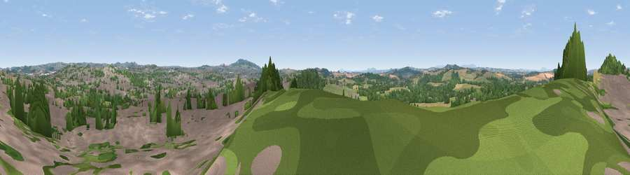

Viewpoint near Wordsley
#27451 in England · top 45% of its area beats it · near Wordsley · access?Where it is
The exact computed spot (SO 88125 86625). Click the marker for map links.
Public access: no public right of way or access land is recorded at this exact spot — it may be on private land. Computed from Natural England's CRoW access layer and OpenStreetMap rights of way — not the legal definitive map. Always verify locally.
The view, rendered

A 360° render of this exact spot computed from the terrain model, tree cover and land cover — summer colours, afternoon light, calibrated against photographs of famous viewpoints. Real trees, hedges and buildings will differ in detail.
The panorama
Grey silhouette: terrain skyline in each direction (720 bearings, Earth curvature and refraction included). Dashed green: skyline with trees (+15 m) and buildings (+8 m) as obstacles. Blue strip: how far the ground is visible on each bearing.
Where the view opens
Wedge length = distance to the farthest visible ground on that bearing (vegetation-aware). Rings at 10, 25 and 50 km.
What fills the view
42% woodland · 26% built-up · 24% grassland · 8% cropland
Angular shares of the visible panorama (visual magnitude), not map area. Landscape diversity 0.55 (0–1 Shannon).
Key numbers
More beautiful places nearby
The staircase of upgrades: each row has a higher view potential than everything closer. Driving times are estimates from straight-line distance, calibrated against real road routing — check an actual route before setting out.
| Place | Direction | Drive | Score |
|---|---|---|---|
| Viewpoint near Wordsley | NNW · 1 km | ~3 min | 55.2 |
| Kinver Edge | SW · 6 km | ~13 min | 60.5 |
| Wychbury Hill | SE · 6 km | ~13 min | 68.0 |
| Viewpoint near Enville | WSW · 7 km | ~14 min | 68.7 |
| Viewpoint near Enville | WSW · 7 km | ~15 min | 73.1 |
| Viewpoint near Clent | SE · 8 km | ~16 min | 74.3 |
| Knowle Hill | WSW · 19 km | ~33 min | 75.5 |
| Viewpoint near Abberley | SSW · 23 km | ~38 min | 77.5 |
52.47742, -2.17627 · source: screening · position refined by local search. Computed location — check access rights before visiting.